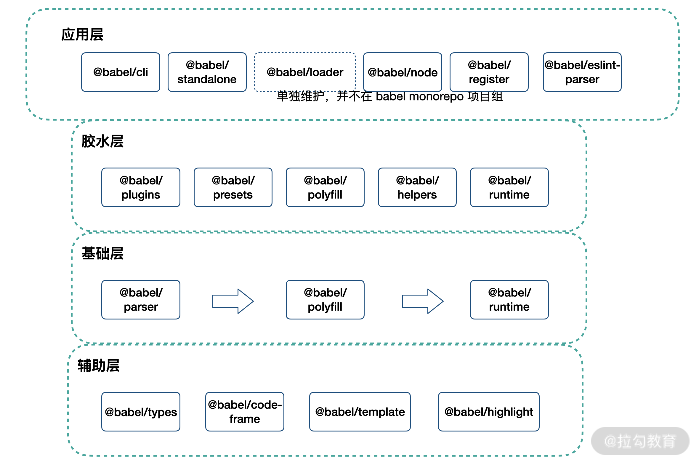

Babel 对自己的定位：下一代 JavaScript 的编译器。它将新语法、新 API 编译成兼容代码，以便在老版本的浏览器也能使用。
Babel 基于插件架构，如果什么插件都不提供，babel 也不做什么事情，其作用如下。
1 | const babel = code => code |
Babel 配置
可以在项目根目录使用 .babelrc(.js), babel.config.json, babel.config.js 进行配置。
1 | module.exports = (api) => { |
@babel/polyfill
1 | /* test.js */ |
上面的配置生成的代码中，Promise 并没有并转换。难道 IE 8 支持 Promise？
不是的，Promise 是新的 API 而不是新的语法，无法被 transform，只能被 polyfill，因此在项目里引入 @babel/polyfill。
但是此时会全量引入 @babel/polyfill，因而在 babel@7.4.0 版本已经被废弃，而是使用 corejs。使用 @babel/preset-env 的 useBuiltIns 配置配合 corejs，实现按需引入。
Plugins 和 Presets
JS 有非常多新的语法和 API，如果一个个添加非常麻烦。因而，babel 提供了很多 presets，presets 就是插件合集，方便进行配置。
1 | @babel/preset-env for compiling ES2015+ syntax |
因而，配置文件变成
1 | module.exports = (api) => { |
@babel/preset-env
由上面可知，preset-env 可帮助我们转换 ES6 代码，同时我们可以使用 target 来配置指定的运行环境。
1 | module.exports = (api) => { |
useBuiltIns
@babel/preset-env 配置 useBuiltIns，决定如何处理 polyfill。
有三个配置项 entry, usage, false(默认值)。
1 | module.exports = (api) => { |
- entry
entry 需要在项目入口引入 polyfill，生成的代码也会引进对应的 polyfill
输入
1 | import "core-js/es/array"; |
输出(取决于环境)
1 | import "core-js/modules/es.array.unscopables.flat"; |
usage
usage 则会扫描所有代码，只引入需要的 polyfill输入
1
2
3
4
5
6const fn = () => {
console.log("test");
};
new Promise(() => {});输出
1
2
3
4
5
6
7
8
9
10
11"use strict";
require("core-js/modules/es.object.to-string.js");
require("core-js/modules/es.promise.js");
var fn = function fn() {
console.log("test");
};
new Promise(function () {});false
不引入 polyfill
babel-plugin-import
babel-plugin-import 是一个按需加载的工具，支持 antd,antd-mobile, lodash, material-ui 等库。
1 |
|
plugin-transform-runtime
作用
- 避免引入的 polyfill 全局污染
- 使 helper 只引入一次
使用
- @babel/plugin-transform-runtime 需要和 @babel/runtime 配合使用；
- @babel/plugin-transform-runtime 用于编译时，作为 devDependencies 使用；
- @babel/plugin-transform-runtime 将业务代码编译，引用 @babel/runtime 提供的 helpers，达到缩减编译产出体积的目的；
- @babel/runtime 用于运行时，作为 dependencies 使用。
总结
如下图所示，Babel 生态基本按照：辅助层 → 基础层 → 胶水层 → 应用层，四级结构完成。
基于基础层提供了基础的编译能力，完成分词、解析 AST、生成产出代码的工作。基础层中，我们将一些抽象能力下沉为辅助层，这些抽象能力被基础层使用。同时，在基础层之上，我们构建了如 @babel/preset-env 等预设/插件能力，这些类似“胶水”的包，完成了代码编译降级所需补丁的构建、运行时逻辑的模块化抽象等工作。在最上层，Babel 生态提供了终端命令行、Webpack loader、浏览器端编译等应用级别的能力。
